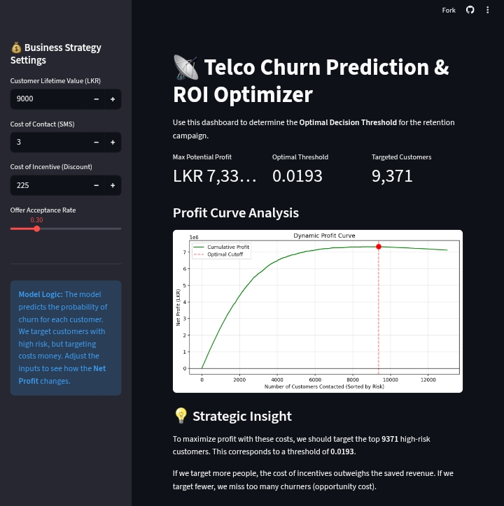

2. Telco Customer Churn Prediction
Maximizing Retention ROI via Behavioral Trend Analysis.

Streamlit dashboard analyzing the financial impact of predictive retention campaigns.
The Challenge: Traditional churn models prioritize accuracy, which fails to account for the financial asymmetry between losing a high-value customer and the cost of sending a retention offer. The goal was to predict churn based purely on a user's first 4 weeks of behavior.
The Engine: Engineered 39 unit-invariant behavioral features (e.g., trend deltas, volatility shifts, Gini coefficients) to quantify user disengagement. Segmented users with UMAP and K-Means and trained an XGBoost model optimized via Optuna and tracked with MLflow.
The Impact:
- Achieved an AUC-ROC of 0.924.
- Shifted from a standard probability threshold (0.5) to a profit-optimized threshold (0.0201), prioritizing a 99% Recall to catch almost every potential churner.
- Generated a projected 981% ROI and LKR 5.04M Net Profit by identifying "Early Burnout" segments.
View This Project on GitHub →